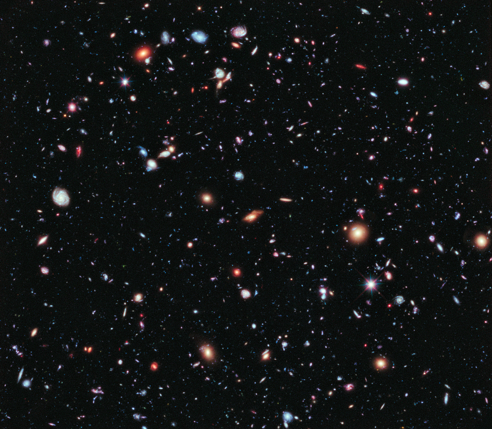
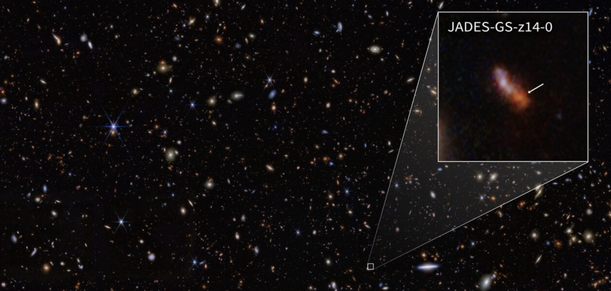
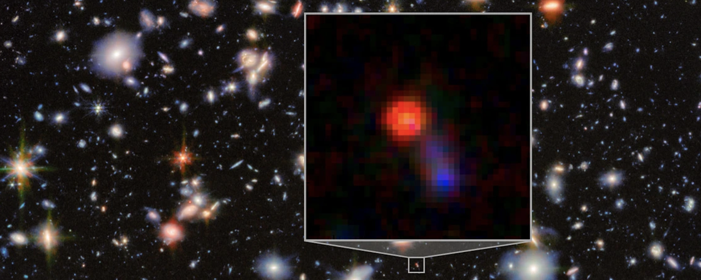
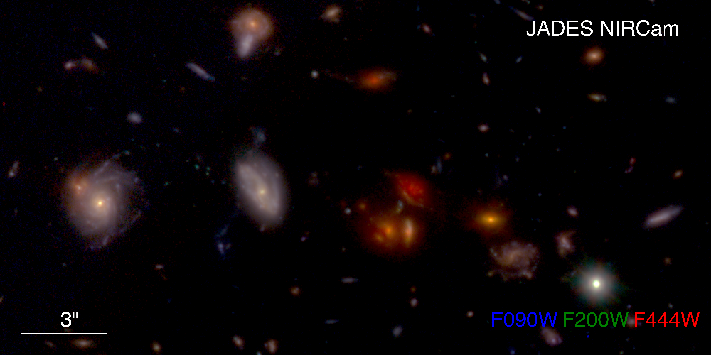

Pierluigi
Rinaldi
I study the formation and evolution of galaxies and black holes across cosmic time using deep JWST imaging and spectroscopy.

How did the first galaxies form and evolve into the systems we observe in the present-day Universe?

Early Universe / Cosmic Reionization
I study galaxies in the first billion years of cosmic history, using ultra-deep imaging and spectroscopy to understand their formation and evolution and their role in cosmic reionization. Image Credit: NASA, ESA, CSA, STScI, Brant Robertson (UC Santa Cruz), Ben Johnson (CfA), Sandro Tacchella (Cambridge), Phill Cargile (CfA)

AGNs / Little Red Dots / Black-Hole Growth
I investigate active galactic nuclei and Little Red Dots in the early Universe to understand how growing black holes influence the structure, star formation, and evolution of their host galaxies.
Image Credit: ESA/Webb, NASA & CSA, G. Östlin, P. G. Perez-Gonzalez, J. Melinder, the JADES Collaboration, M. Zamani (ESA/Webb)
Stellar Mass Assembly / Cosmic Structures
My work also addresses how galaxies assemble their stellar mass across cosmic time and how this process relates to the broader build-up of cosmic structures, from dense environments to the large-scale structures.
Image Credit: NASA, ESA, CSA, the JADES Collaboration